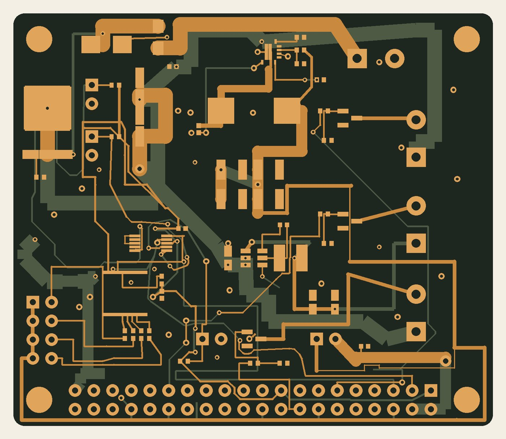

Heater and thermistor control PCB
A Raspberry Pi HAT that drives three heaters and reads three thermistors.

Powers three heaters and up to four LEDs from a Raspberry Pi. Heater A is a 10 × 10 mm pad held at 95 °C. Heaters B and C are 20 × 40 mm pads run at 40 to 95 °C.
How it works
- GPIO-driven MOSFETs switch each heater. A pin set high at 3.3 V pulls the MOSFET to ground and current flows.
- An ADS1115 ADC reads three thermistors and reports to the Pi over I2C.
- A TPS56837 buck converts 15 V to 5.1 V for the Pi and LEDs, and an AP2114H LDO makes 3.3 V for heater A.
- Headers for a TLC LED driver, with the LEDs mounted off-board.
Revisions from design review
- Added an RC filter and ESD clamp diode to each thermistor input.
- Widened the Pi's 5 V trace to at least 2 mm and rerouted it around Q3, which it had been running through.
- Fixed a reversed MOSFET (Q4) and moved the heater pin from GPIO 29 to 13.
- Upsized the TVS to an SMBJ18A, changed the thermistor connectors, and corrected the mounting holes to 2.7 mm.
- Kept two layers, with extra decoupling to hold down voltage spikes.